Monsieur Cuisine Connect ·
De la 0.17.8 a la 0.19.1
Las versiones posteriores trajeron peeling de patata con pesaje, instrucciones para montar accesorios y actualizaciones de la base de datos de recetas a través de Internet. A continuación se presentan las gotas de Connect, los últimos gráficos de accesorios y una lista de cambios en las versiones individuales.
Potato peeling and tooltips in programs
En el programa de pelado, la báscula espera a que confirmes que todo está listo. Así tienes tiempo de montar el WunderPeeler sobre la cuchilla desde arriba. Después de tarar el vaso, confirma primero el peso de las patatas y después la cantidad de agua añadida. La lectura confirmada sigue en pantalla mientras cierras el vaso. La guía actual consta de nueve imágenes y termina mostrando cómo añadir el agua.
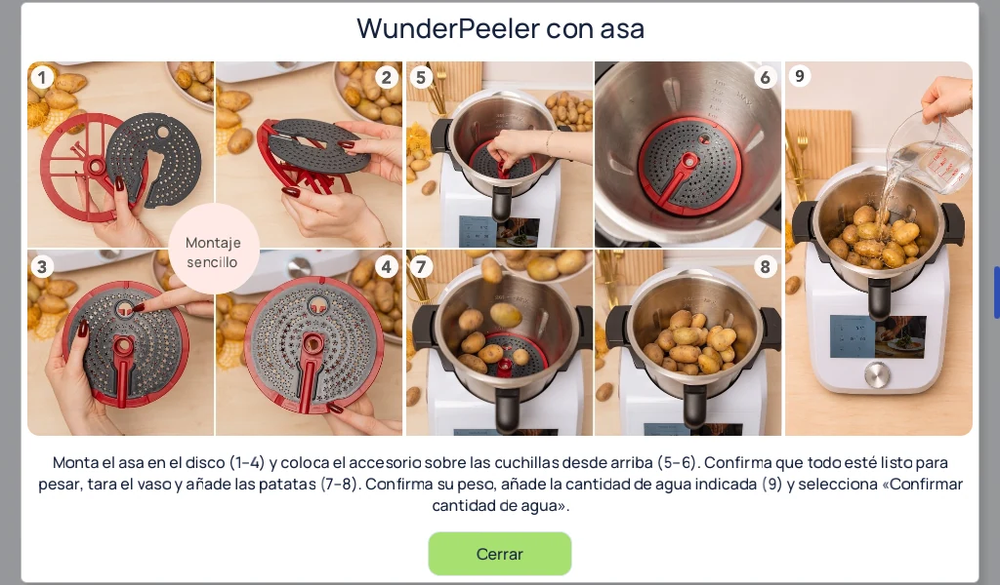
El botón Accesorios para este programa abre las instrucciones para el programa seleccionado. El adaptador de corte tiene una vista de los elementos y un esquema de montaje azul en el tazón. El tiempo de corte predeterminado es de un minuto. En los huevos de cocción se pueden ver cestas y cartucho de silicona negro opcional. La flecha amarilla muestra dónde poner el molde, y la ilustración recuerda al aceite antes de insertar los huevos.

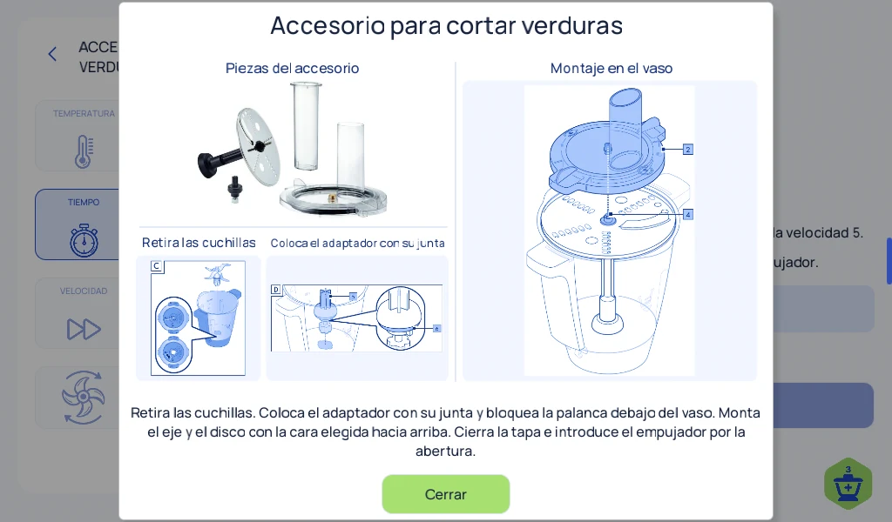

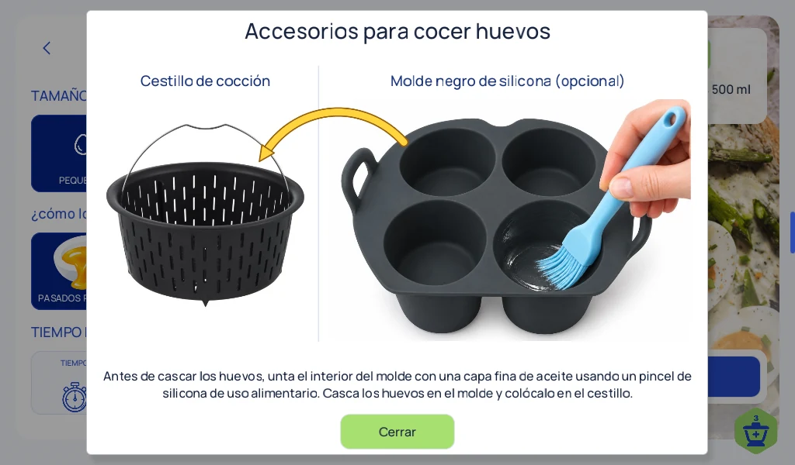
El vapor muestra otro elemento de vaporización. Cocinar arroz y mostrar canastas Sous-video. En Sous-video, el escudo significa una recomendación para asegurar la bolsa de vacío en la cesta, y el limón amarillo distingue la pista de añadir 30 g de jugo de limón.

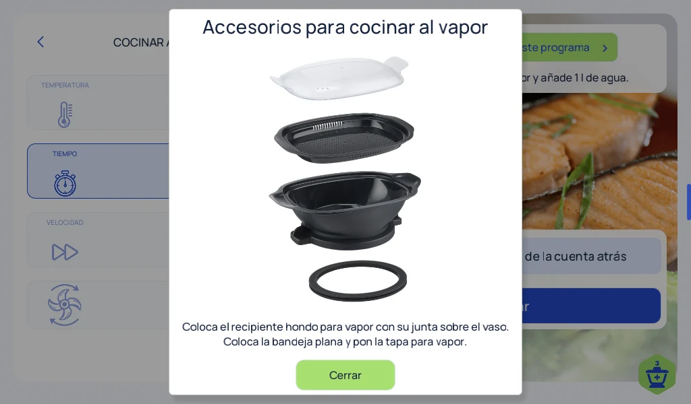

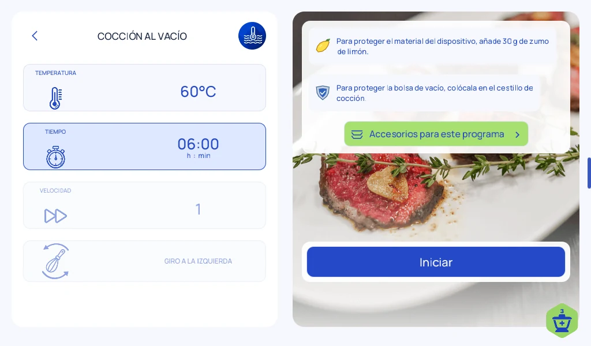

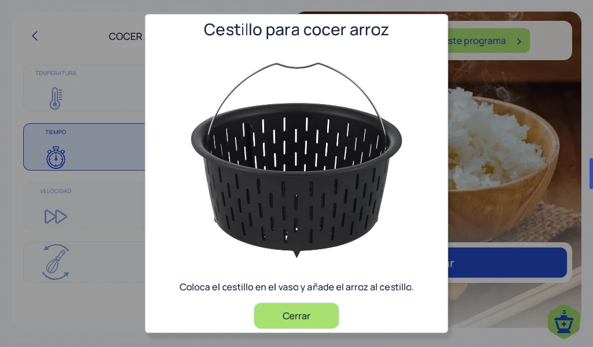

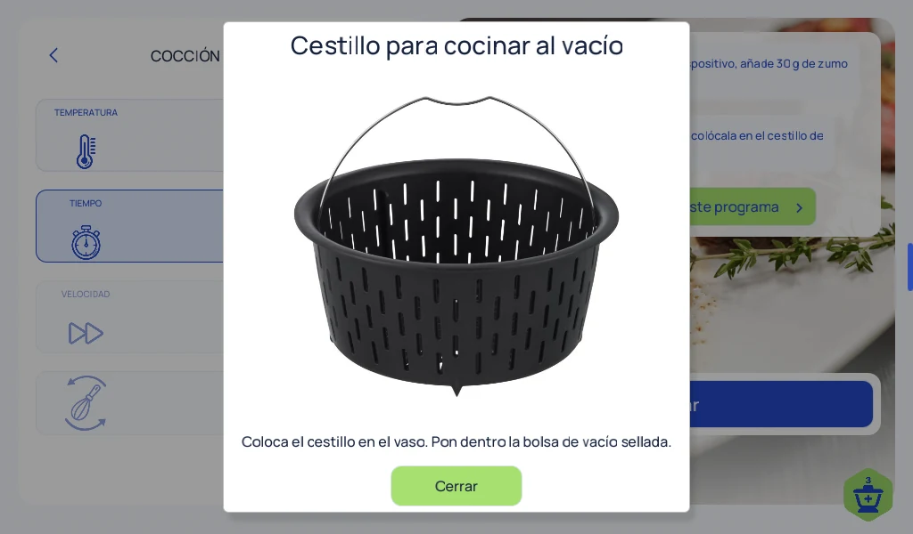
señal de peso, calefacción y lavado
Los ajustes de sonido fueron acompañados por el volumen de apertura y cierre de la tapa y el volumen separado de la señal para lograr la masa deseada. La siguiente enmienda refuerza el archivo de señal de peso en sí mismo. En Calentamiento de Agua, el controlador Connect utiliza un ajuste de calefacción equivalente a 120°C para alcanzar el objetivo de 100°C más rápido. La lectura de temperatura permanece visible al final del programa.
En la limpieza corta y larga, las rotaciones crecen gradualmente a la velocidad prescrita, por un nivel cada medio segundo. Antes de cambiar de dirección, la hoja frenará por lo menos tres segundos. El mensaje de imagen de mariposa aparece en el programa de lavado, en Smoothie, en Mezcla en el puré y a velocidades de 5-10 en Ajustes propios.

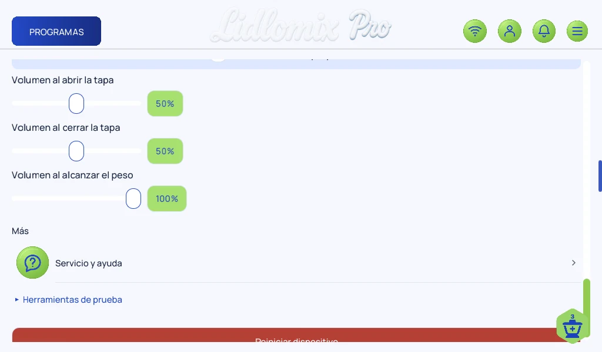

Directorio y actualizaciones a través de Internet
En la página Catálogo todas las recetas MC utilizan la fuente de fábrica. El Pro personalizado tiene un directorio separado al que se envían actualizaciones de recetas y fotos. Puede cambiar de una base de datos descargada a un directorio integrado. Ver Mis nombres tienen filtros “All”, “Backgrounds” y “Created”.
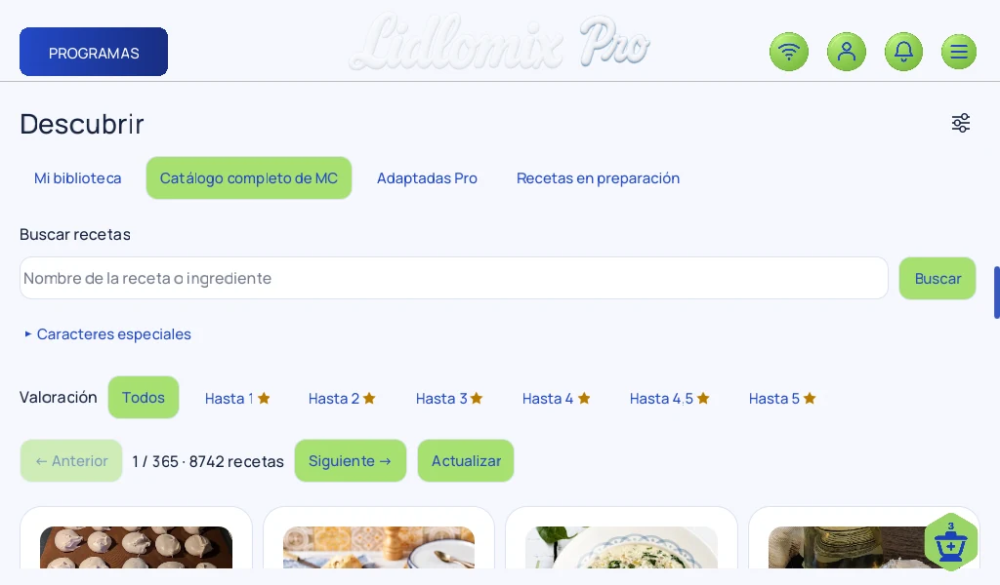
El menú de actualización separa la base de reglas de la aplicación robot. Cuando se descarga, muestra el porcentaje, y cuando se comprueba y desempaque muestra el nombre del escenario. El botón “Check Updates” está alineado con los otros campos. En Connect, comprobé a descargar una revisión estable de la base de datos e ir al mensaje “Catalogue verificado”. La instalación de la normativa es confirmada por el usuario. Durante esta prueba, una actualización de la base de datos estaba disponible en un canal estable.
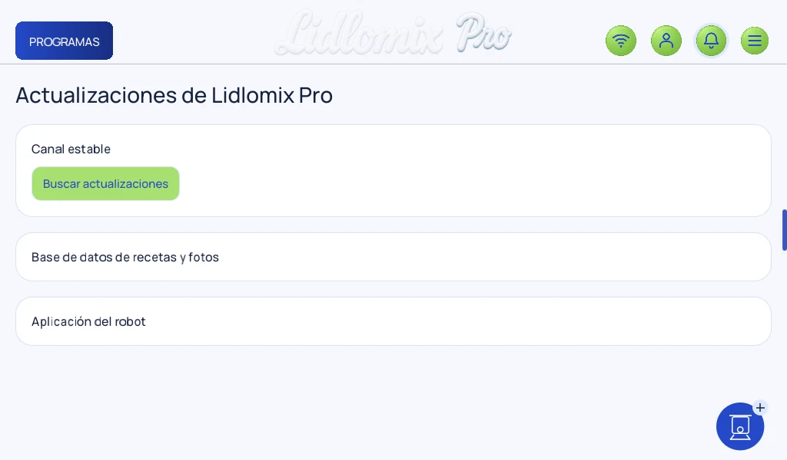
Ajustes, Firefox y piezas de repuesto
Los ajustes tienen iconos de estilo de baldosas más grandes en la pantalla del programa. Los iconos, cuentas, actualizaciones y menús Wi-Fi en la barra superior son más pequeños. A la izquierda, el botón sigue cambiando “Programas” y “Provisiones”. Se ha eliminado la flecha inversa adicional.
El botón de inicio de sesión de la cuenta de Monsieur Cuisine lanza el formulario de inicio de sesión Lidl directamente en Firefox. En la misma pantalla, el botón "Abrir tienda con repuestos" lleva a la categoría Connect en la tienda Monsieur Cuisine. En el dispositivo, comprobé la apertura de ambos lados.
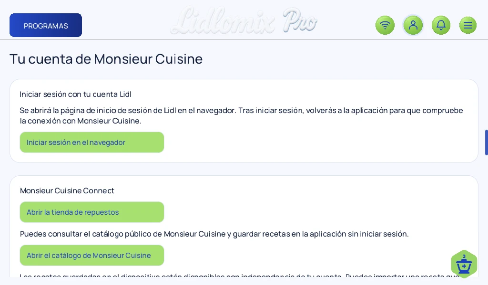
Lista de cambios de 0.17.8
- 0.17.8 — volumen de grifo predeterminado del 10%. Entrada anterior y caída.
- 0.17.9 — el primer programa de peeling de patata con WunderPeeler de pesaje, guía y pantalla de soporte.
- 0.18.0 — orden de cabeceras y campos en los programas de peeling y corte de verduras.
- 0.18.1 — Versión de prueba de peeling con cambio automático de dirección durante el ciclo.
- 0.18.2 - cambio en la primera fase del ciclo de prueba.
- 0.18.3 — primera recopilación con sonidos adicionales de tapa y logros en masa.
- 0.18.4 — deslizadores de volumen separados para abrir la tapa, cerrar la tapa y ganar peso.
- 0.18.5 – ajustar los sonidos y comprobar si la configuración del volumen se guarda después de la actualización.
- 0.18.6 — la primera versión del robot con una pantalla de actualizaciones de Internet y soporte de canal beta.
- 0.18.7 — intenta descargar y abrir una actualización de prueba del directorio de fotos.
- 0.18.8 — Intentos de incremental la base de datos y transmitir una actualización verificada al instalador Android.
- 0.18.9 — separación de las dos fuentes de recetas, Catálogo completo de MC y Adaptadas Pro.
- 0.19.0 — una vista separada de “Mis Nombres” y sus filtros en Customized Pro.
- 0.19.1 — la transición del cliente de actualización a un canal estable y un intento de un paquete de base real en Connect.
- Más tarde compilación 0.19.1 — confirmación de pesaje en peeling, calefacción y cambios de lavado, accesorios gráficos, advertencias de mariposa, iconos refrescados, login en Firefox, tienda de piezas y barra de actualización.
Volver a la historia de la actualización · Comparte tus comentarios sobre el foro